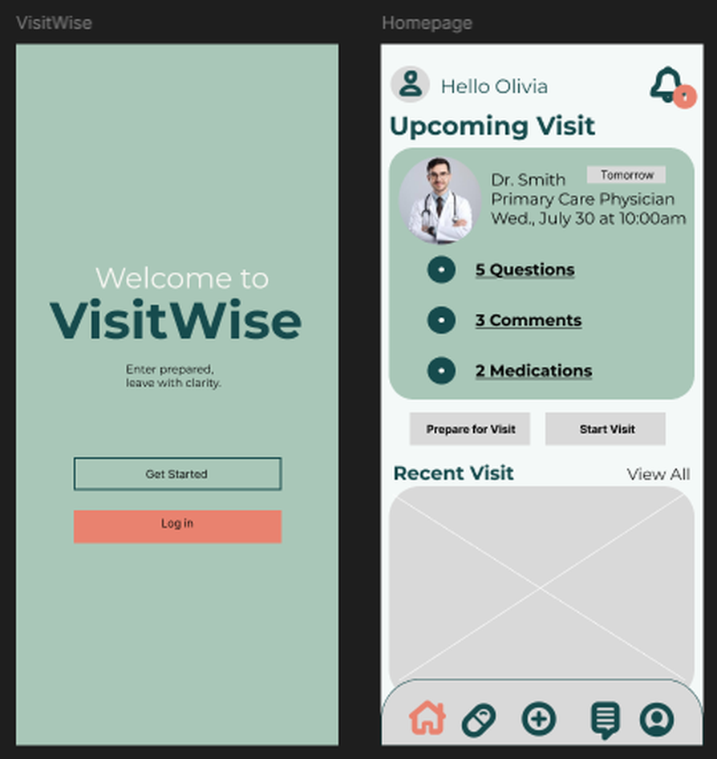
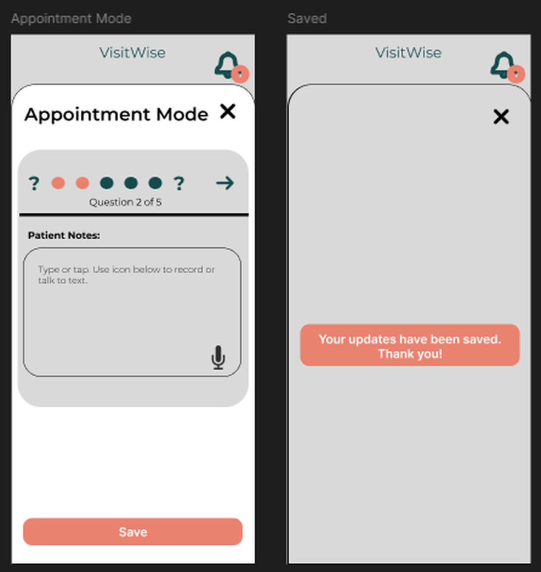
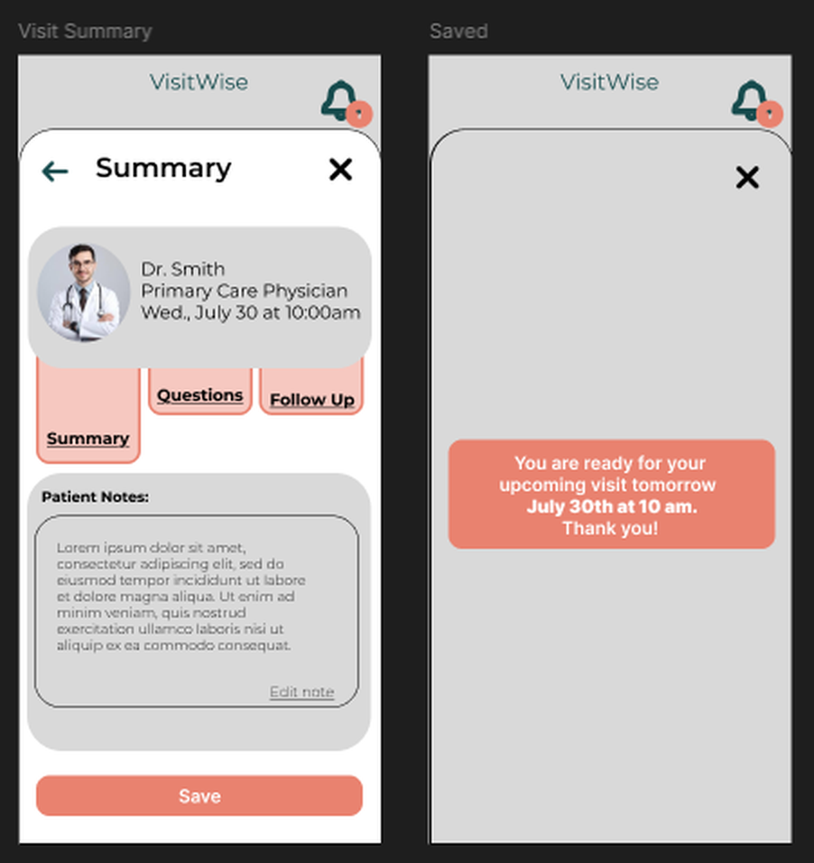

Case study · Research & design
VisitWise
A medical appointment is short, dense, and stressful, and most people prepare for one in their phone notes. VisitWise puts the preparing, the asking and the remembering in one place. This was my graduate capstone, and the only project here where I was designing as well as researching.
- My role
- Interviewer & designer
- Team
- Team 4, three graduate students
- Course
- HCI 594
- Methods
- Survey, heuristic review, moderated usability testing
The problem
Healthcare appointments are brief and information dense. In a short window a patient has to describe symptoms, ask what they came to ask, and hold on to what the provider tells them. Most people prepare for that using whatever is nearest: phone notes, a paper list, a text thread, a patient portal, or memory.
Because the information is scattered, three things go wrong. Questions get forgotten. Symptoms get left out. And what the provider actually said gets remembered wrong, or not at all.
What the literature already knew
Structured pre-visit planning helps patients communicate more effectively with providers. Question prompt lists reduce missed concerns. And patients frequently forget medical advice after an appointment, particularly under stress or information overload. The gap was not knowing that preparation helps. It was that nothing supports doing it.
The competition is the Notes app, paper, and portal messages. All three are unstructured, none of them are built for this, and none of them let a caregiver help. That gave us three design principles to hold the project to: prepare before the appointment, organize the questions, support recall after the visit.
What we set out to do
1. Reduce the effort of preparing
Measured by task completion, ease ratings, participant feedback, and hesitation we could observe during testing. This one never changed.
2. Improve communication with providers
Measured by whether people could prepare questions and reach them during the appointment. The goal stayed, but we narrowed the scope on purpose: helping a patient organize and reach their own questions, rather than trying to solve patient and provider communication in general.
3. Support recall afterwards
Measured by whether people could record what the provider said, see which questions they had covered, and find the visit again later.
What we built
An interactive high-fidelity mobile prototype covering appointment preparation, question organization, medication tracking, appointment notes, and caregiver collaboration. The core of it is Appointment Mode: the screen you open while you are actually sitting in the room.



Open the round 2 prototype
Open the round 1 prototype
How we tested it
Three methods, in order, each one narrowing what the next one had to look at.
- A survey, to work out what people actually do now and which features were worth building. It ran behind a screener: over 18, and at least one doctor visit in the past year. Twelve people qualified and completed it.
- An expert evaluation, a heuristic review of the first prototype against Jakob Nielsen’s heuristics, coupled with the eight standards set out in the 21st Century IDEA Act.
- Moderated usability testing, round one, with three participants. Each was given an appointment scenario and asked to use Appointment Mode while thinking aloud.
Twelve survey responses and three usability sessions are small samples. We treated every result as directional and said so in the report rather than writing it up as though it settled anything.
What we found
The survey confirmed the premise. People are using phone notes, portals, paper and memory, in combination, and none of it is joined up. That was enough to justify one centralized place to prepare questions, prioritize concerns, record answers and organize next steps, and enough to cut everything that was not that.
The heuristic review liked the things that were easy to like: familiar terminology, recognition rather than recall, a simple visual design. What it flagged was structural, and it flagged the same things the participants later hit: system feedback, user control, consistency, error prevention, accessibility, and navigation. Most of all, nothing confirmed to the user that what they had just done had worked.
Round 1 · Use Appointment Mode
3.17/5Mean of 3
Worked
- All three participants completed the task.
- Two found Appointment Mode without much trouble.
- The vocabulary was familiar. Nobody had to be told what the app was for.
Did not
- One participant could not work out where to begin at all.
- Status and controls looked identical. One participant read “Tomorrow” as a reminder rather than as a button.
- Button wording, moving between questions, and seeing how far through you were all came up unprompted.
- Nothing confirmed that what had been entered was saved.
Everyone finished, and the average ease rating was 3.17 out of 5. Those two facts sitting next to each other are the finding: the task was completable and it was not easy, and if we had only counted completions we would have called it a pass.
The requests we did not build
Individual participants asked for chat, Apple Health integration, and tags or filters. None of it recurred across sessions, so we wrote it down as future opportunity rather than letting one person’s request expand the scope while the core experience was still confusing people.
What changed
Round two went entirely on the existing experience. No new features.
1. Make starting obvious
A clear Start Appointment action, so the one participant who did not know where to begin would have somewhere to begin.
2. Separate status from action
Information and controls stopped looking the same. This is the “Tomorrow” problem, and it was the most expensive thing we found.
3. Show progress
The active question is prominent, and question two of five says so. You can see where you are without counting.
4. Confirm the save
An explicit confirmation after entering notes, because the heuristic review and the participants independently asked for the same thing.
Looking back
The number I keep coming back to is 3.17. On my last study every task scored above four and I had to go digging through transcripts to find what was wrong. Here the score and the sessions agreed with each other. A mediocre rating you can explain is worth more than a good one you cannot.
The lesson underneath it was about status against action. We wrote “Tomorrow” as a label. Someone read it as a reminder and waited for the app to do something. Nothing on that screen distinguished information from a control, and no amount of visual polish fixes that: it is a decision you make before you start styling anything.
What I would fix is the sample. Twelve survey responses and three sessions are enough to point at a problem and not enough to size it. With more time I would widen both, test the whole appointment rather than one flow through it, and look properly at the caregiver collaboration and privacy questions we parked.
References
Grant, R. W., et al. (2019). Visit planning using a waiting room health IT
tool. The Annals of Family Medicine, 17(2), 141–149.
Sansoni, J. E., Grootemaat, P., & Duncan, C. (2015). Question prompt lists
in health consultations: A review. Patient Education and Counseling,
98(12), 1454–1464.
Watson, P. W. B., & McKinstry, B. (2009). A systematic review of
interventions to improve recall of medical advice.
Journal of the Royal Society of Medicine, 102(6), 235–243.